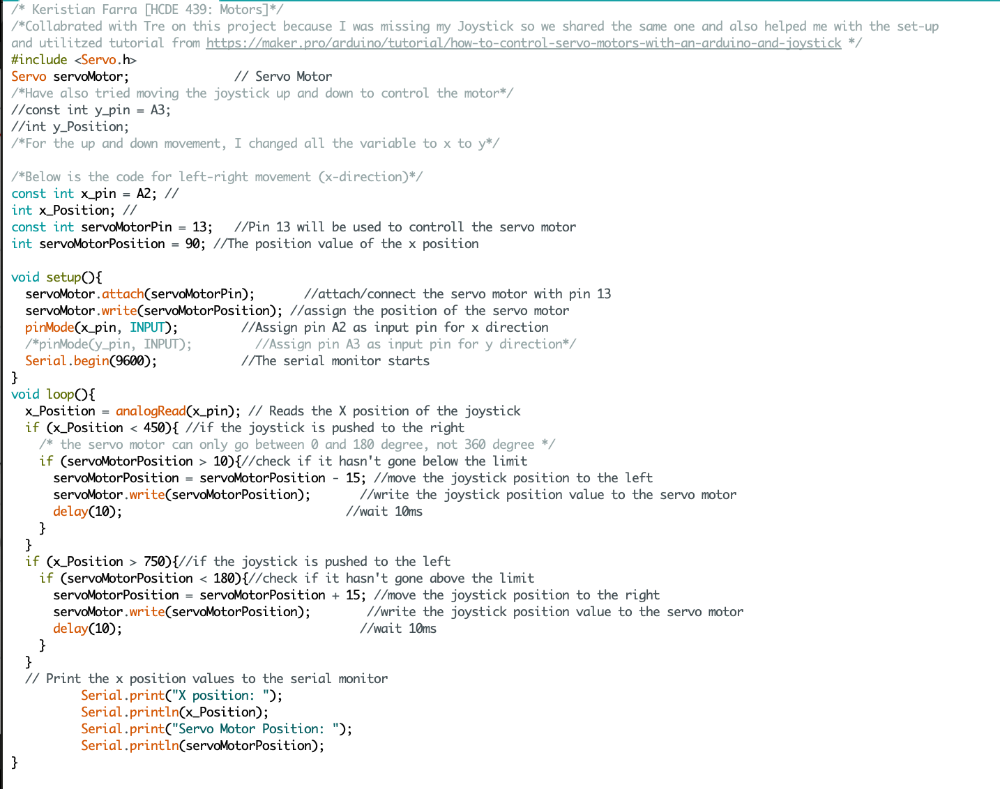

Assignment 5 : Motors!
Task
Create a schematic, circuit, and code that uses an input device to control a motor! The input device will be the joystick and the motor can be the servo or the DC motor. I used servo motor.
Demo
The circuit in action: left-right movement

As seen below in another Demo GIF, I have also tried to control the motor using the up and down movement on the joystick [Y]. I changed all the variable to Y in the code and used A3 for y-position values

Circuit

Above is the circuit and it shows how it is set-up.
Schematic
Above is the schematic for this circuit. It shows how each part is connected. I utilized the breadboard to connect the parts with wires. For instance, connected the 5V and GND from the arduino board to the breadboard and then connected the 5V and GND from the servo motor and the joystick to the breadboard. The schematic simplified to shows that the all the 5Vs and GNDs are connected.
Above is the Joystick movement values I found on Last Minute Engineers website. This is important because it shows the range of x-position and y-position values, which I used in my code to control the motor with the joystick.
I initially thought I need to use a resistor so that my Ardruino won't break so I attempt to use 10K ohms resistor, but the motor wouldn't turn on. I then used lower value resistor thinking the resistor was to high, but I learned there was not need for additional resistor and it worked.
Code
Above is the code I wrote for the Motor. Read the comments on the code to understand how it works.